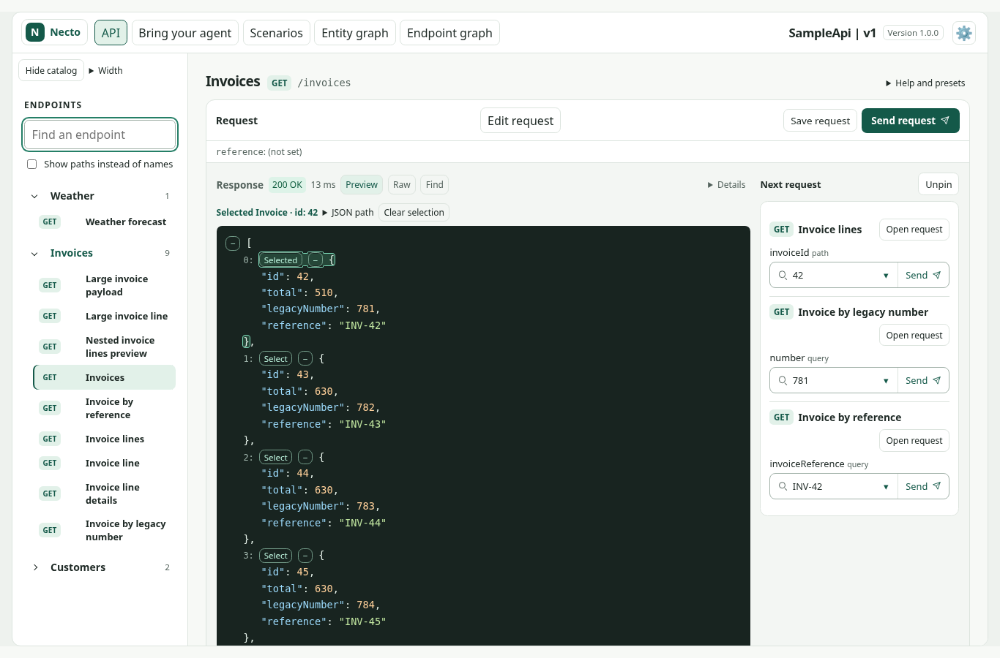

Presets that travel with you
Reuse headers and parameters across requests. Switch tenant or environment without filling the same fields again.
OpenAPI UI with a backbone.
Select an object. Carry its values into your next request. Save the journey and run it again.
Built for developers and QA working with ASP.NET Core APIs.
/invoices200 OKSelect the invoice to carry its ID forward.
Invoice 42 has a line with ID 17. Necto can carry that line's ID into its details request, too.
Sample data. This example does not call an API.
Your API, connected
Go from “what did I get?” to “what can I do next?”
Keep the data, the context, and the next step together.

Select an invoice, choose a related request, and carry its ID forward. Open the form to review or edit before sending.
How connections workMake it your workspace
Reuse headers and parameters across requests. Switch tenant or environment without filling the same fields again.
Bring in external OpenAPI documents and Necto mappings. Follow connected values across configured services.
Give your MCP-capable agent the API context. Keep your own model, HTTP tools, and credentials.
Explore the MCP bridge →At home in ASP.NET Core
Necto ships its UI in the .NET package and reads your OpenAPI document. Serve the workspace alongside the API you already have.
dotnet add package Necto.OpenApi// With OpenAPI already configured
app.MapOpenApi();
app.MapNectoEndpointMappings();
app.UseNectoUI();Start with a single response